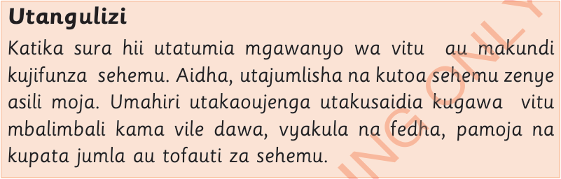
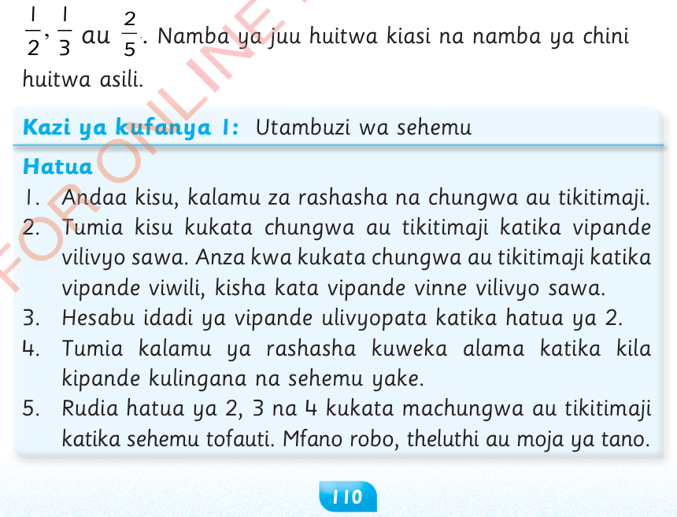

Sura ya Tano
Sehemu

Utangulizi
Katika sura hii utatumia mgawanyo wa vitu au makundi kujifunza sehemu.Aidha, utajumlisha na kutoa sehemu zenye asili moja.Umahiri utakaoujenga utakusaidia kugawa vitu mbalimbali kama vile dawa, vyakula na fedha, pamoja na kupata jumla au tofauti za sehemu.
Kutambua sehemu
Sehemu ni vipande vinavyounda kitu kizima.Kwa mfano, unapokata chungwa katika vipande na kuwagawia rafiki zako.Kila kipande huitwa sehemu.Sehemu huandikwa kama hivi,
Namba ya juu huitwa kiasi na namba ya chini huitwa asili.

Kazi ya kufanya 1:
Utambuzi wa sehemu
Hatua
1.
Andaa kisu, kalamu za rashasha na chungwa au tikitimaji.
2.
Tumia kisu kukata chungwa au tikitimaji katika vipande vilivyo sawa.Anza kwa kukata chungwa au tikitimaji katika vipande viwili, kisha kata vipande vinne vilivyo sawa.
3.
Hesabu idadi ya vipande ulivyopata katika hatua ya 2.
4.
Tumia kalamu ya rashasha kuweka alama katika kila kipande kulingana na sehemu yake.
5.
Rudia hatua ya 2, 3 na 4 kukata machungwa au tikitimaji katika sehemu tofauti.Mfano robo, theluthi au moja ya tano.